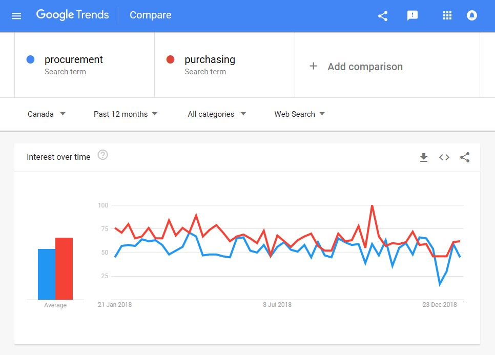
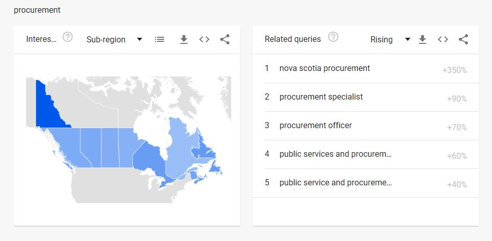
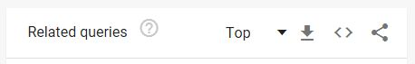
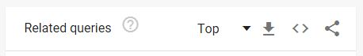
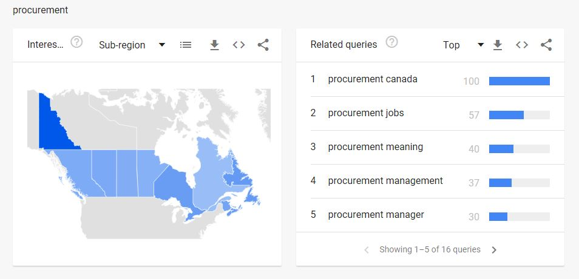

Labeling systems
On this page
How labels work
In the real world, think of public spaces and how certain common objects can communicate context, action, and meaning to us at a glance:
- Benches are for sitting and observing
- Stairs are for moving up and down
- Doors are for entering and exiting
- Monuments remind us of history and context
Simple visual cues that we are familiar with allow us to quickly make sense of large amount of information. For example, if you see a playground, outdoor benches and a large open green space, you know this area might be a park.
Photo by Droneflyer Nick on Unsplash
In the digital environment, labels function in a very similar way. They help communicate meaning and help us decide whether we are in the right place or not, at a glance.
Labels are the names we give to:
- Categories of information
- Page titles and sub-titles
- Link text
- Action-words on interactive elements such as buttons (aka calls to action)
It's your responsibility to ensure that labels clearly capture and communicate the intended purpose of a page, text segment or grouping of content. To do this, get comfortable asking lots of questions.
I can look at a label from the user’s perspective and ask if it would make sense to them. But I can ask deeper questions: does this label align perfectly with the content it represents? How well does this label set expectations when users click on it? How would a description or example help clarify this label?
Danger of labels
Unclear labels confuse users, waste their time, and prevent them from finding the information they need.
Additionally, some labels, even when clear and concise, may negatively impact the user experience. Some labels have an emotional and/or social component to them that you must consider. Topics like immigration, disability, finances, health, etc. can be sensitive or stressful for people. Consider the context and the impact of the language around these labels.
Example 1
Many medical conditions with a high impact on daily life are thought of as just that, a condition, rather than a disability.
Two of the criteria to be eligible for the disability tax credit (DTC) are to "be markedly restricted in at least one of the basic activities of daily living" or to "need life-sustaining therapy".
Despite the name of the tax credit, having a "disability" is not in the criteria.
Someone with diabetes, or Alzheimer’s, or who has lost their hearing later in life (for example) may not think they have a disability. This may mean they never benefit from the financial support their condition potentially qualifies them for.
Labelling matters. In this case, a name like "Impacted health tax credit" would be more inclusive. The screening would stay the same, but more people might look into seeing if they, or a loved one, qualify.
You don't get to practice Information Architecture without worrying about politics and governance and culture anymore. If you try to, you will fail. [...]
Another thing that's exciting is that I'm seeing more talk about ethics. People are increasingly asking whether we're doing the right thing and are we really helping our customers.
Example 2
The label of "Trusted traveller" is used to designate an airline security checkpoint for pre-screened travellers. This is an efficient internal term, tied to the "Trusted Traveller Program". However, when used in an everyday setting, it seems to suggest that those who aren't pre-screened aren't trusted.
Actual user tweet:
If there is a trusted travellers line, does that mean that those in the general entrance line are not trusted? Maybe we could use a different term? Pre-screened maybe? @FlyYYC #yyc #inclusive #totrustornot

Example 3+
For passing and failing examples of labels, refer to: Principle of choices and the Principle of disclosure
Identify user's keywords
A quick way to help determine the user's keywords is by looking at your site's analytics.
Additionally, Google Trends will show search term frequency by country, province, timeframe, and category.
Examples:
- In the 12 months, searches in Canada for "wellness" out-performs "well-being". The daily average is:
- 84 searches for "wellness"
- 1 search for "well-being"

- In the 12 months, searches in Canada for "procurement" is similar to searches for "purchasing".  However:
- Scroll down the page to get more information. 
- Change the drop-down "Rising" to "Top" to see the context of how procurement is most frequently searched.
Before After
After - Notice the context of when "procurement" is being searched. The third most popular "procurement" search is "procurement meaning", which suggests that many users don't know what it's in the first place. So although "procurement" is a popular term, it's not necessarily popular for the right reason. 
Determining a user's keywords is important, but be sure to also determine why it's popular. After a thorough analysis, popular keywords should be considered when creating content.